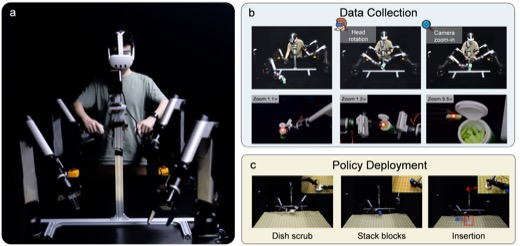
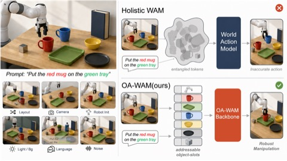
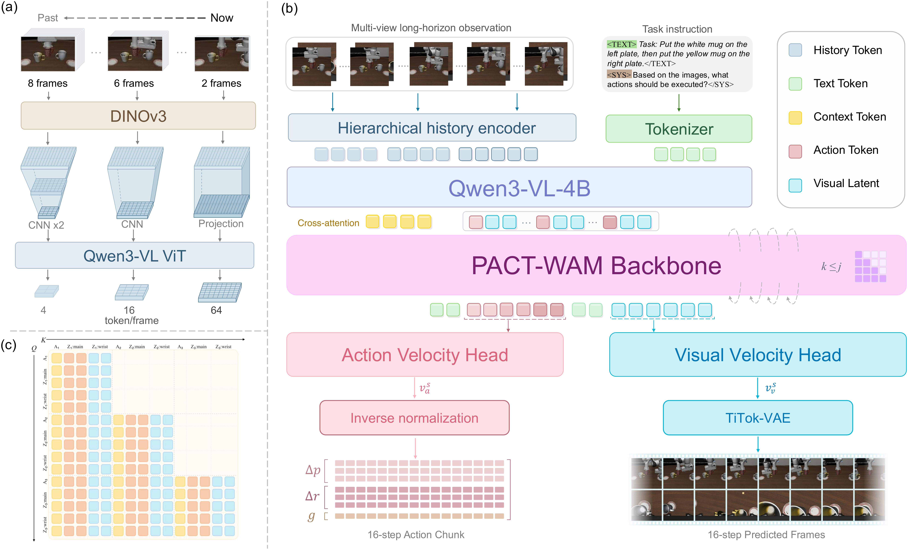
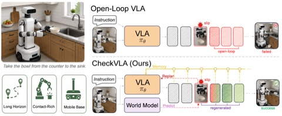
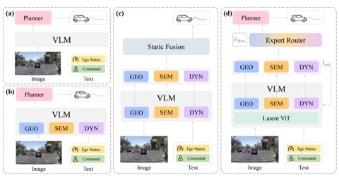
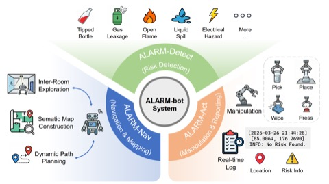
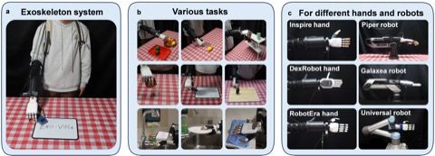

AVR: Active Vision-Driven Precise Robot Manipulation with Viewpoint and Focal Length Optimization
2026 IEEE International Conference on Robotics & Automation (ICRA), Vienna, Austria
I am a master’s student in the Smart Sensing and Robotics (SSR) Group at Tsinghua University, advised by Prof. Wenbo Ding and Prof. Xiao-Ping Zhang. I received my B.S. from Jilin University in 2024.
My research interests include Vision-Language-Action (VLA) Models, World Action Models (WAMs), Embodied Manipulation, End-to-End Autonomous Driving, and Agentic Multimodal Large Language Models (MLLMs).

2026 IEEE International Conference on Robotics & Automation (ICRA), Vienna, Austria





Under Review

2025 IEEE International Conference on Intelligent Robots and Systems (IROS), Hangzhou, China
Ego-centric Embodied Foundation Model
World Action Model (WAM), Autonomous Driving
Vision-Language-Action (VLA), Bimanual Mobile Manipulation